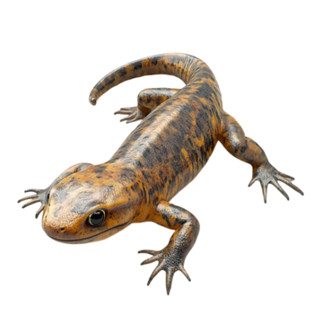
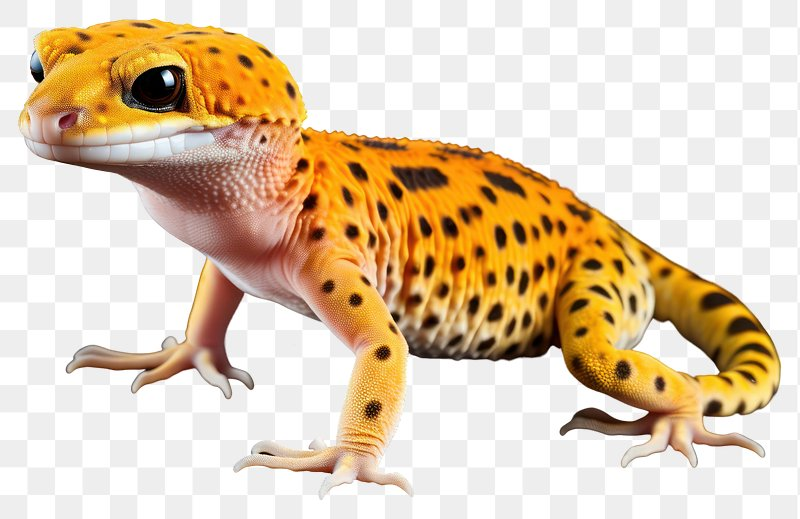

Gecko (Gekkonidae)

Hábitat: Puede ser terrestre, en arboles.
Estilo de vida:son carnivoras.
Características:
- Los geckos poseen extremidades grandes principalmente sus dedos de sus patas
- Sus escamas son pequeñas y tienen una cabeza aplanada sin espinas ni crestas.
- los geckos pueden hacer sonidos por que poseen cuerdas vocales.
- tienen un mecanismo de defensa en la cual botan su cola.
- Poseen una visión extremadamente excelente de noche.
volver al menu
Salamandra
Salamandra (Caudata)

Hábitat: Puede ser terrestre, en arboles.
Estilo de vida:son carnívoras.
Características:
- Las salamandras son carnívoras alimentándose principalmente de animales invertebrados.
- Poseen una piel lisa y brillante de color negro y con numerosas manchas amarillas
- Las salamandras son una vía para conducir la energía y materia entre los ecosistemas acuáticos y terrestres que se conectan.
- La longevidad de la salamandra común se estima en aproximadamente 12 años, aunque pueden llegar a vivir varias decenas de años en cautividad.
- Las salamandras tienen a ser solitarias.
Volver al menu
volver al menu